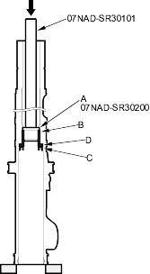
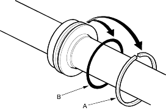
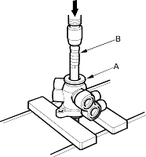

- Insert the special tools into the cylinder.
Make sure the attachment (A) of the special tools is securely positioned on the bushing edges (B).

- Place the cylinder in a press, then remove the cylinder end seal (C), backup ring (D), and bushing (B) from the cylinder by pressing on the special tool end.
Note the items when pressing the cylinder end seal:
- Keep tool straight to avoid damaging the cylinder wall. Check the tool angle and correct it if necessary, when removing the cylinder end seal.
- Use a press to remove the cylinder end seal. Do not try to remove the seal by striking the tool; striking the tool would break the cylinder end seal, and the seal would remain in the cylinder.
- Carefully pry the piston seal ring (A) and O-ring (B) off the rack piston. Be careful not to damage the inside of the seal ring groove and piston edges when removing the seal ring.

- Before removing the valve housing (A), apply vinyl tape (B) to the splines on the pinion shaft.

- Separate the valve housing from the pinion shaft/valve using a press.